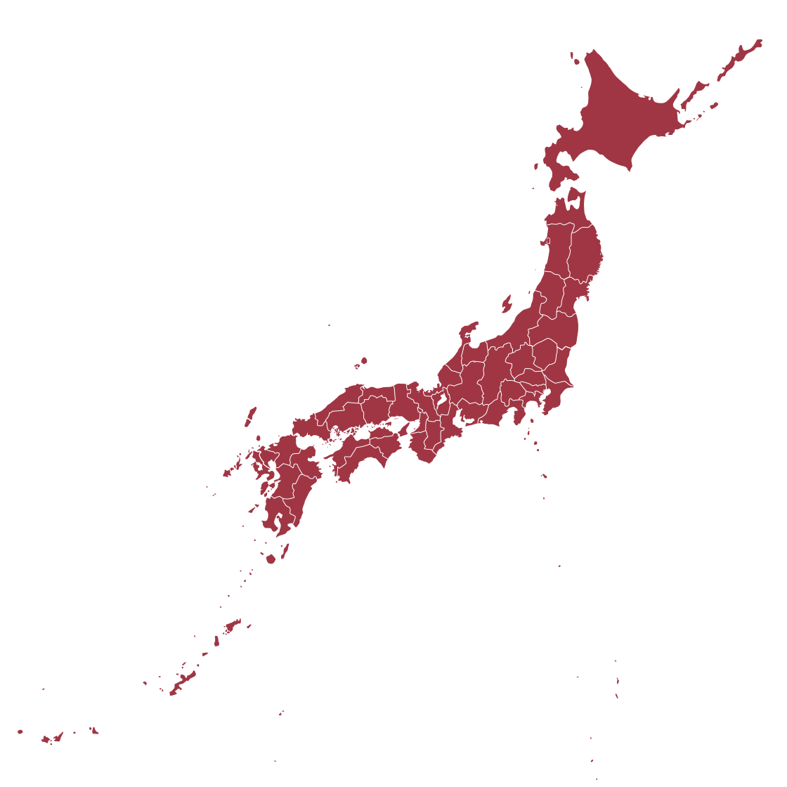
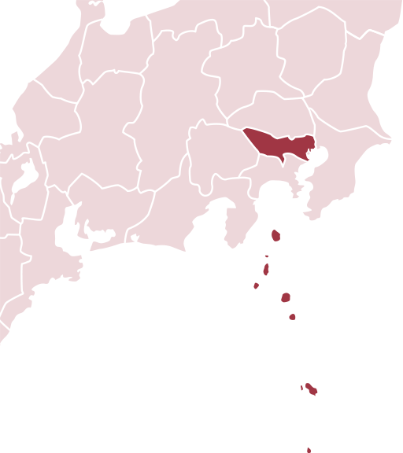

About Japan

National Flag
Nisshoki (also known as Hinomaru)
Language
Japanese
National Anthem
Kimi ga Yo
Main Religions
Shintoism, Buddhism and Christianity

Land Area
377,974.17 km2 (145,936.64 mi2)
Number of Prefectures: 47
